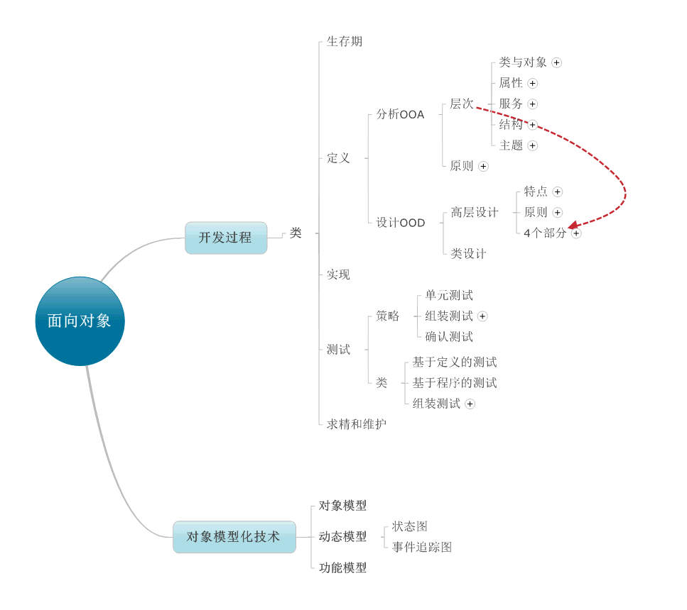
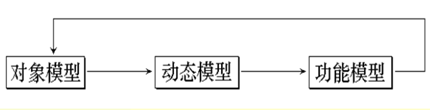
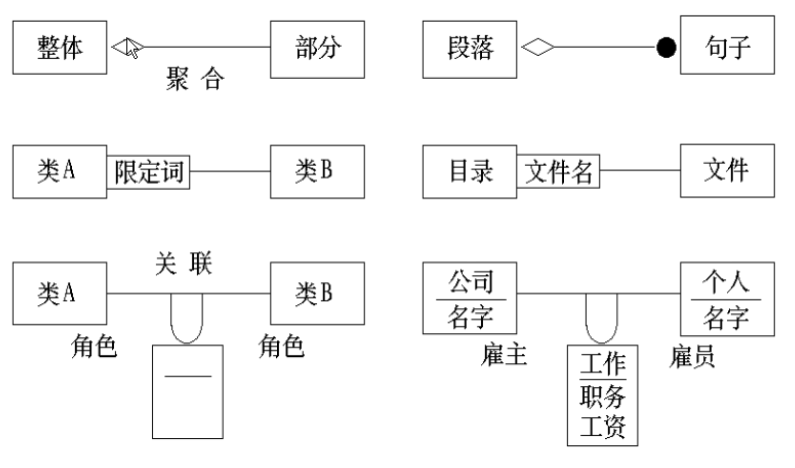
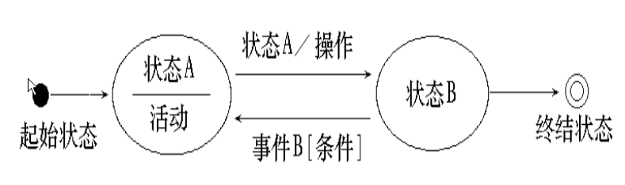
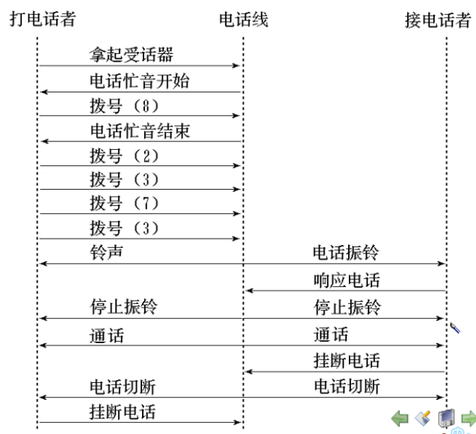
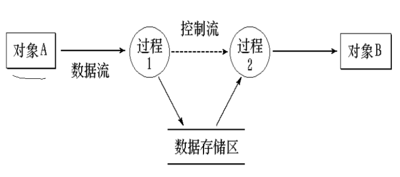
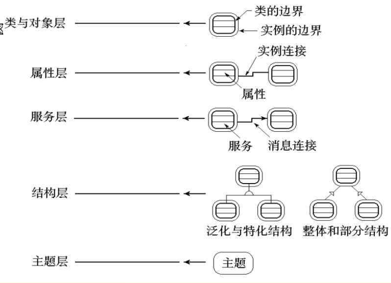
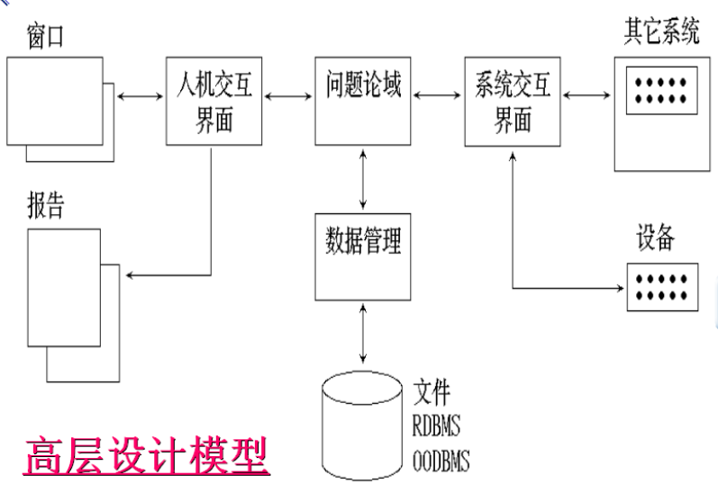

面向对象技术（Object-Oriented Technology）。面向对象技术强调在软件开发过程中面向客观世界或问题域中的事物，采用人类在认识客观世界的过程中普遍运用的思维方法，直观、自然地描述客观世界中的有关事物。面向对象技术的基本特征主要有抽象性、封装性、继承性和多态性。

对象模型化技术（OMT）
对象模型化技术把分析时收集的信息构造在三类模型中，即对象模型，功能模型和动态模型

对象模型：最关键的模型，描述系统的静态结构，包括构成系统的类和对象，以及他们之间的关系
在对象模型化技术中，类与类之间的关系叫做关联
关联分为聚合，限定，角色

动态模型：着重于系统的控制逻辑，包括两个图，一个是状态图，一个是事件追踪图
状态图：是一个状态和事件的网络，侧重于描述每一类对象的动态行为
在状态图中，状态是对某一时刻中属性特征的概括。而状态迁移表示这一类对象在何时对系统内发生的哪些事件做出何种响应。

事件追踪图：侧重于说明发生于系统执行过程中的一个特定“场景”

功能模型：通过计算，从输入数据能得到什么样的输出数据，不考虑参加计算的数据按什么时序执行。功能模型由多个数据流图组成，它们指明从外部输入，通过操作和内部存储，指导外部输出，这整个的数据流情况。

基于三个模型的分析过程
功能模型定义“做什么”
动态模型定义“何时做”
对象模型定义“对谁做”
面向对象的分析（OOA）
构造OOA概念模型的5个层次
类与对象，属性，服务，结构与主题
类与对象层：如何建立基本块
属性层：对象的属性和实例连接组成
服务层：对象的服务，加上对象实例之间消息通信组成
结构层：描述了一般——特殊结构或泛化——特化结构，泛化——特化结构表明了类的继承性
主题层：将对象归类到各个主题中，将有关对象用一个主题边框框起来

构造OOA模型采用的原则：抽象，封装，继承，分类，聚合，关联，消息通讯
面向对象的设计（OOD）
1， 高层设计
构造应用软件的总体模型
标识在计算机环境中进行问题解决工作所需要的概念
在设计阶段中继续采用分析阶段中提到的5个层次，这5个层次用于建立系统的4个组成成分
问题论域部分：指执行基本应用功能的对象
人机交互部分：指定了用于系统的某个特定实现的界面技术
任务管理部分：指定了那些创建系统时必须建立的操作系统部分
数据管理部分：定义了那些与所用数据库技术接口的对象

2， 类设计
面向对象环境下的测试策略
1， 单元测试（类测试）：面向对象环境下，最小的可测试的单元式封装了的类或对象，而不是程序模块
2， 组装测试
基于线索的测试：它把为响应某一系统数据或事件所需的一组类组装在一起。每一条线索将分别测试和组装
基于应用的测试：它着眼于系统结构，首先测试独立类，这些类只使用很少的服务器类。再测试那些使用了独立类的相关类。
3， 确认测试：着眼于用户的要求和用户能够认可的系统输出。
类测试的种类
基于定义的测试：把类当做一个黑盒对待，确认类的实现是否遵照它的定义
基于程序的测试：考虑类的实现，确定代码编写得是否正确
组装测试：
类组装：测试一个新类时，需要先测试在定义中所涉及的类，在考虑这些类的组装
总体组装：把所有组成完整软件的各个部分集合在一起。测试所选的测试用例应当瞄准待开发软件的目标。